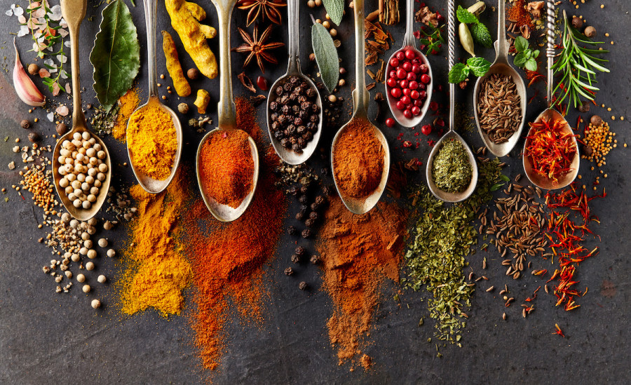
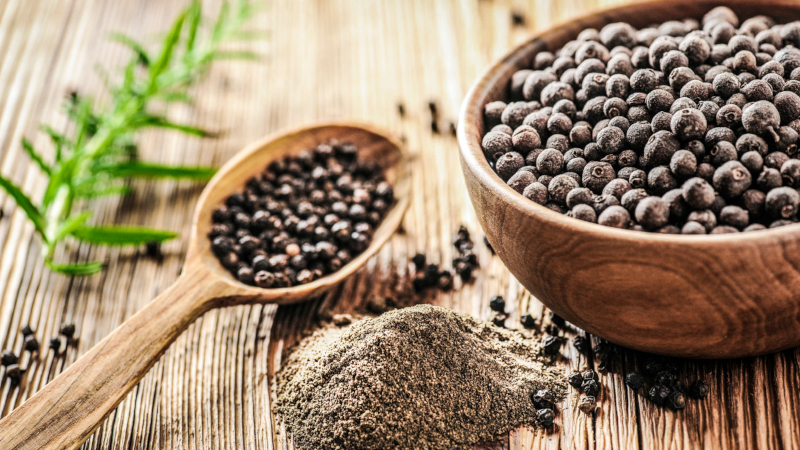
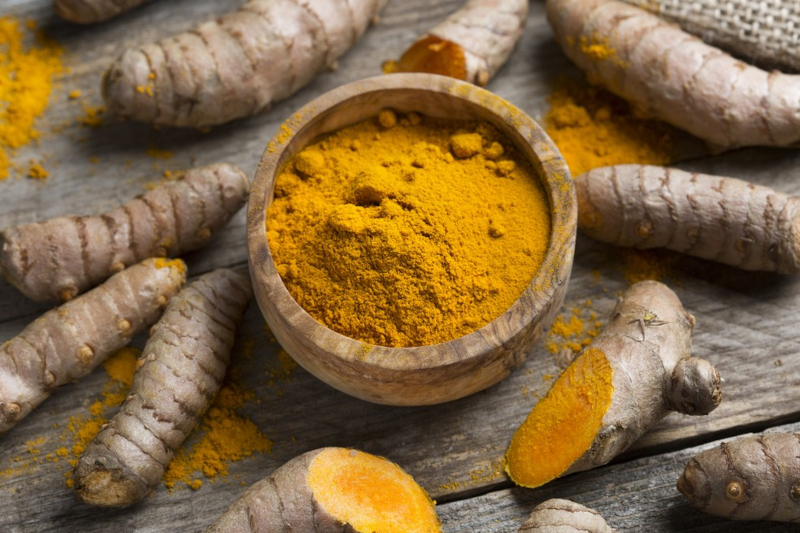
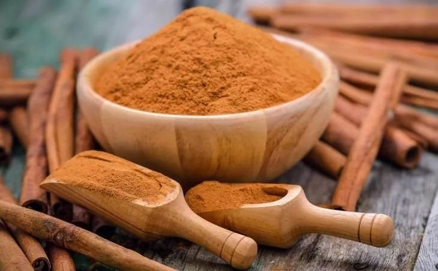
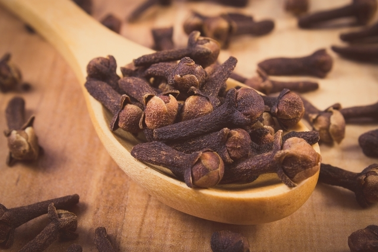
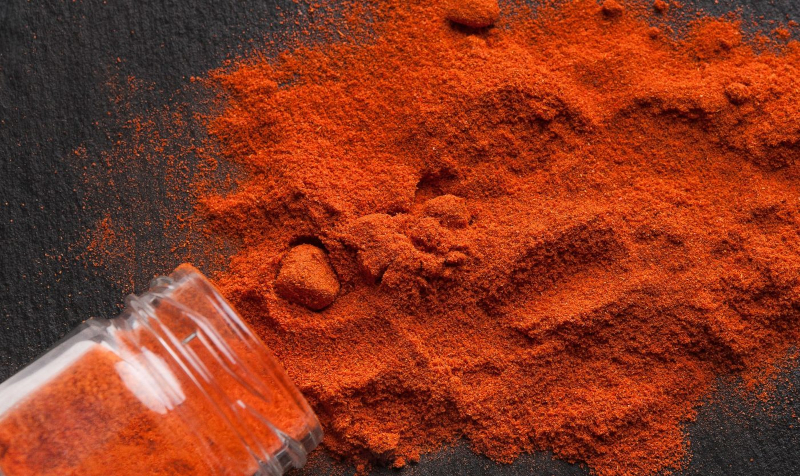
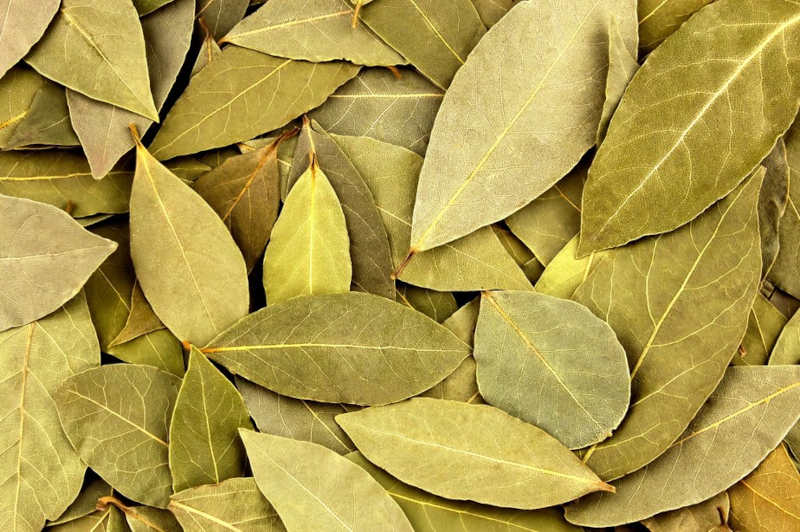
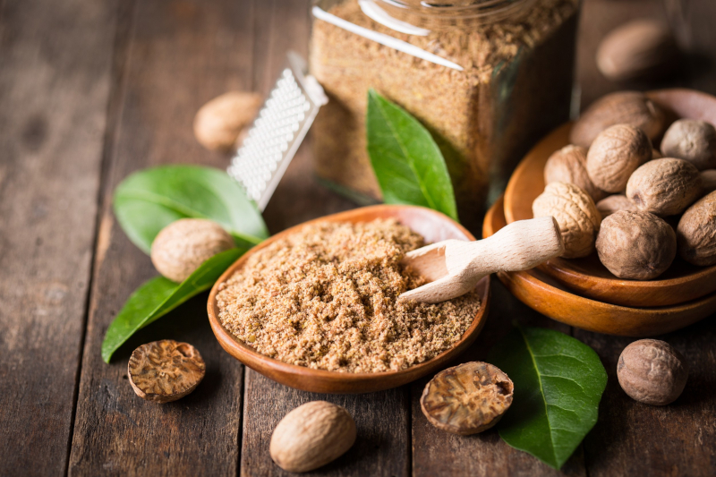

Especiarias, o que da sabor ao mundo
A humanidade sempre buscou formas diferentes de temperar seus alimentos. Por isso, a busca, conquista e comercialização de especiarias foi o ponto principal de grandes momentos da História, como as Grandes Navegações, que resultaram no Descobrimento do Brasil.
O termo especiaria ou espécie (do latim species), a partir dos séculos XIV e XV na Europa Ocidental, designou diversos produtos de origem vegetal (flor, fruto, semente, casca, caule, raiz), de aroma ou sabor acentuados. Isto deve-se à presença de óleos essenciais. O seu uso distingue-as das ervas aromáticas, das quais são utilizadas principalmente as folhas.
"Os Mullus" colhendo pimenta.
Ilustração da versão francesa das Viagens de Marco Pollo
Desde aquela época, a Índia é origem das especiarias mais usadas, como o gengibre, pimenta-do-reino, cravo-da-índia, açafrão, cúrcuma e cardamomo. As ilhas Molucas, na Indonésia (conhecidas como “Ilhas das Especiarias”) são fonte da noz-moscada e cravo. A canela é originária do Sri Lanka e da China. Alguns desses temperos já eram conhecidos dos gregos, como o cardamomo. Outros temperos foram descobertos pelos europeus apenas na época das Cruzadas, entre os séculos XI e XIII, durante a luta contra muçulmanos pela posse da Terra Santa.
Grandes navegações
Com o fim das Cruzadas, criou-se a Rota das Especiarias, que cruzava o Oriente Médio e chegava à Europa a partir dos comerciantes venezianos. Os árabes detiveram o monopólio dessa rota após a tomara de Constatinopla em 1453. Isso encareceu os produtos originários da Índia – inclusive as especiarias, vendidas maceradas, secas ou em pó e indispensáveis para a culinária europeia.
Santa Catarina do Monte Sinai, carraca utilizado para transporte de mercadorias (Wikipédia)
Uma rota alternativa era necessária – pelo oceano. Portugal, o único país com condições de financiar navegações milionárias, foi o primeiro a lançar-se ao mar em direção às Índias. Foi assim que, em 1500, aportaram no Brasil, segundo consta, imaginando encontrar-se na Ásia.
Vasco da Gama Perante o Samorim de Calecute (Wikipédia)
Na tentativa de contornar o problema, Portugal e Espanha organizaram expedições para a exploração de rotas alternativas - um caminho marítimo para o Oriente. O projeto português previa um ciclo oriental, contornando a África, enquanto o projeto espanhol apostou no ciclo ocidental, que culminou no descobrimento da América. O estabelecimento de nova rota com o caminho descoberto por Vasco da Gama reduziu de imediato os preços das especiarias - os venezianos começaram a comprar pimenta em Lisboa pela metade do preço do que custava em Alexandria, oferecida pelos árabes.
Variades de sabores
Atualmente, diversas especiarias são utilizadas na cozinha do brasileiro, varia de reagião para região, sendo elas as mundialmente usadas como a Pimenta-do-reino, Canela, Cravo-da-índia, Mostarda, etc., até as especiarias locais como o Colorau, Pripioca e Camuru, segue abaixo um pouco mais sobre todas essas variadades de sabores.
Pimenta-do-reino
Trazida da Ásia equatorial pelos mercadores muçulmanos na época das Grandes Navegações, a pimenta-do-reino se espalhou pelo mundo. Hoje, o Brasil é um dos maiores produtores e exportadores do tempero.
A pimenta-do-reino é um dos condimentos mais apreciados no mundo e vai bem com quase tudo. Ela agrega sabor a todo tipo de carne grelhada, cozida ou assada. Pode ser usada em sopas, saladas de verduras e legumes, ovos, omeletes e suflês.
Açafrão-da-terra
Também conhecido como cúrcuma, o açafrão ou açafrão-da-terra é uma especiaria que veio da Índia e é muito apreciada na culinária tradicional desse país, sendo o ingrediente principal do curry. Por aqui, ele é bastante utilizado para conferir cor e sabor a pratos como arroz, sopas, frango, carne vermelha e legumes cozidos.
Além de seu uso na cozinha, esse tempero contém substâncias antioxidantes que ajudam a prevenir o envelhecimento, doenças degenerativas, diversos tipos de câncer e problemas cardiovasculares.
Canela
De sabor quente, picante, doce e amadeirado, a canela já era usada no Oriente Médio por volta de 2000 a.C. Ela foi levada para a Europa pelos comerciantes árabes, e de lá ela se espalhou para o restante do mundo.
Conhecida por suas propriedades termogênicas, a canela também é muito utilizada em bolos, tortas, pães, roscas, biscoitos e sobremesas, além de trazer um toque oriental ao café. Além disso, essa especiaria participa de pratos salgados. Embora esse uso seja menos frequente por aqui, a canela é um ingrediente presente na cozinha árabe e libanesa em receitas de massas, aves assadas, quibe e arroz marroquino.
Cravo-da-índia
Assim como a canela, o cravo-da-índia era uma especiaria do Oriente muito apreciada pelos europeus na época das Grandes Navegações, sendo até hoje conhecido por suas propriedades antissépticas, anti-inflamatórias e termogênicas.
Na culinária brasileira, o cravo é bastante utilizado como aromatizante para pratos doces, como compotas de frutas, arroz doce, canjica e cocada. Porém, ele também forma uma boa combinação com abóbora, batata-doce e cenoura e carnes de caça.
Colorau
O colorau é uma especiaria típica do Brasil e de outros países da América do Sul. Também conhecido como urucum, ele é proveniente dos frutos do urucuzeiro e foi primeiro utilizado pelos povos indígenas na fabricação de tintas para pintura corporal.
De sabor suave e adocicado, ele é bastante utilizado como aromatizante e corante natural em pratos como carnes e molhos.
Louro
O louro é uma especiaria de origem turca que apresenta uma riquíssima combinação de sabores: são mais de 50 compostos aromáticos que lembram o aroma de tomilho, coentro, hortelã e orégano.
Mesmo com tamanha complexidade de sabores, o louro é um tempero muito utilizado no dia a dia, especialmente no preparo do feijão e da lentilha. Além disso, ele combina perfeitamente com sopas, molhos, carnes e aves.
Noz-moscada
De sabor adocicado e quente, a noz-moscada é uma especiaria ideal para valorizar receitas mais encorpadas, como massas com molho branco ou à base de queijo, pratos gratinados e fondues.
Além disso, ela pode ser utilizada como aromatizante em pratos e bebidas doces, como compota de frutas e chocolate quente.
Essas são algumas das muitas especiarias utilizadas e apreciadas em todo o mundo. Para entender o uso gastronômico das especiarias, segue um vídeo do Chef Taico sobre o uso das mesmas na cozinha.